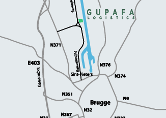

GUPAFA LOGISTICS n.v.
Industriezone Herdersbrug
Pathoekeweg 148
8000 Brugge
T +32 50 45 00 42
F +32 50 45 00 02
info@gupafa.be
BTW BE 0435.802.192
BNP BE47 2800 5699 1880
KBC BE20 4723 0052 3156

vindt uw route:
Mappy
|
ViaMichelin
|
Map24
Enkele van de merken van tegels die Cedexsa verhandelt: ACIF, ARIOSTEA, ARKIM, BASALT, BLAUWE HARDSTEEN, CERACASA, CERCOM, CERDOMUS, CERIM, CHKZ, COTTO D'ESTE, DAUGRES, ENERGIEKER, EUROCOL, FLOORGRES, GRANISER, GROHN, IMOLA, KRONOS, MAC3, MARCO POLO, NORDICA, PANARIA, PORCELANOVA, RAGNO, SALCAMAR, SICBA, SILVER, TAU CERAMICA, TREND, VALPANARO, WITTE FAIENCE
Tegels Cedexsa homepage
|
Nieuw bij tegels Cedexsa
|
Bekijk enkele videofragmenten van de Tegels Cedexsa Services
|
Het tegel gamma van tegels Cedexsa
|
Contacteer Cedexsa Tegels